|
|
|
plants text index | photo
index
|
| Senduduk Melastoma malabathricum Family Melastomaceae updated Nov 10 Where seen? This shrub with pretty purple flowers is commonly seen in many of our open wild places, including coastal areas. It is sometimes called the Singapore rhododendron although it is not a rhododendron and is not confined to Singapore. Features: Shrub 1-2m tall, though they can grow into small trees if left uncut. Leaves narrow and pointed at both ends (5-9cm long) with 3-5 longitudinal veins. Stems reddish and covered with bristly scales. Flowers purplish-pink, large (5-7cm) and showy, 5-10 growing at the end of a branch. According to Corners, the flower opens only for one day, opening at about 8am and closing in the late afternoon, the petals falling off a few days later. Shrubs with white flowers are sometimes seen, and the Malays consider these to have magical properties. The petals emerge from a cup-shaped calyx which remains after the flowers drop off. The fruits are berry-like and break open irregularly. The seeds stain the mouth when eaten, and is sweet and slightly astringent. They are eaten by children as well as birds, squirrels and monkeys. Status and threats: According to Burkill, the sour young leaves are eaten with food in Java, while the leaves and roots are used in traditional treatments of diarrhoea and dysentery.Powdered leaves may be sprinkled over wounds, roots used for a mouthwash for toothache. It is even used to treat elephants! The fruits may also be used to obtain a black dye, while the ashes of the plant is used to fix dyes. |
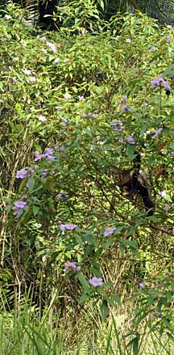 Pulau Ubin, Apr 09 |
|
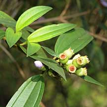 Pulau Ubin, Apr 09 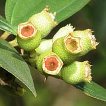 |
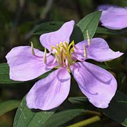 Pulau Ubin, Apr 09 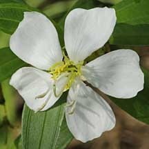 Some have white flowers. |
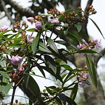 Pulau Ubin, Apr 09 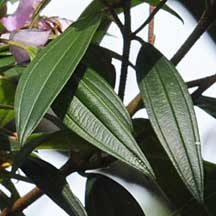 |
|
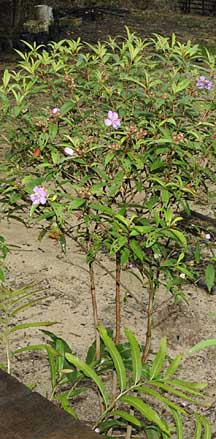 Pasir Ris, Sep 09 |
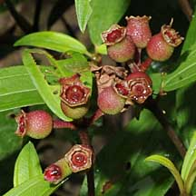 Pasir Ris, Sep 09 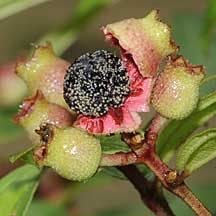 |
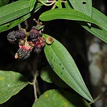 Chek Jawa, Oct 09 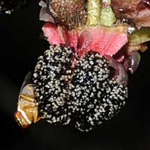 |
|
Links
References
|